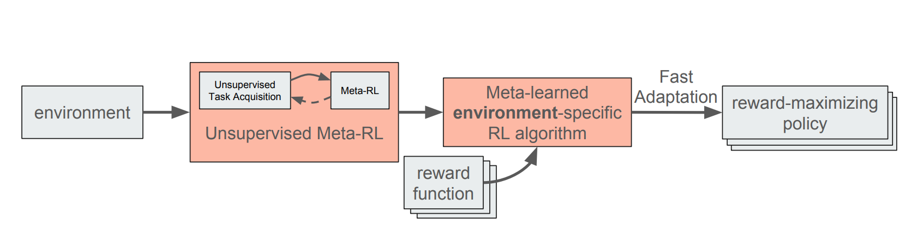
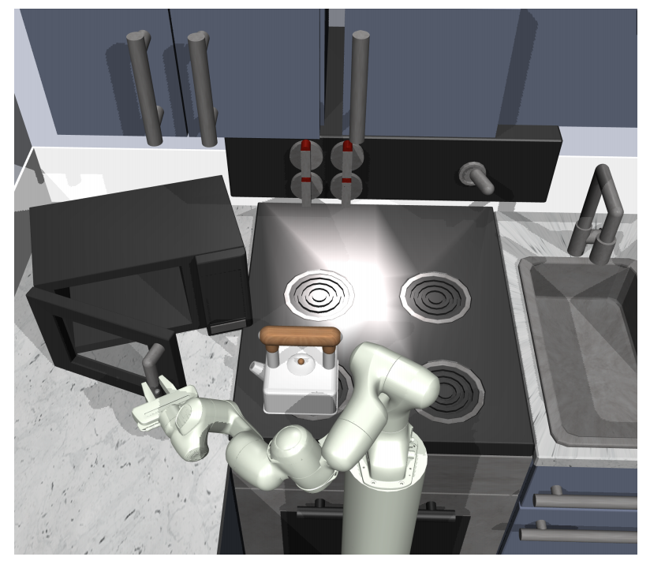
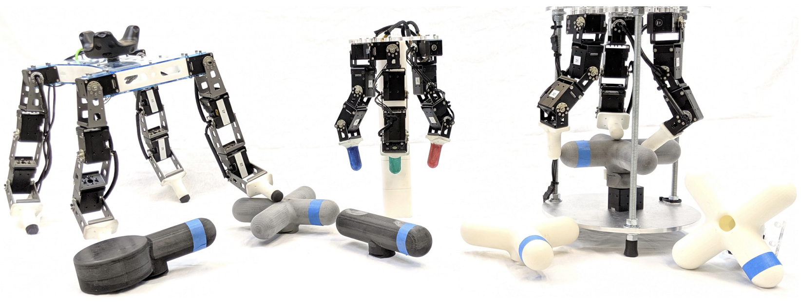
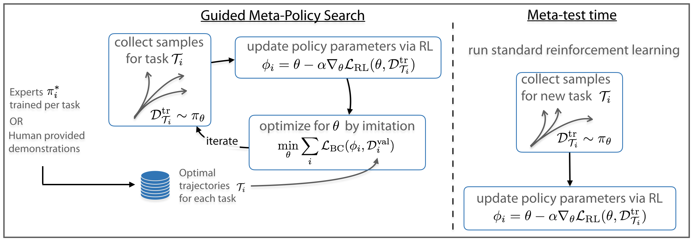
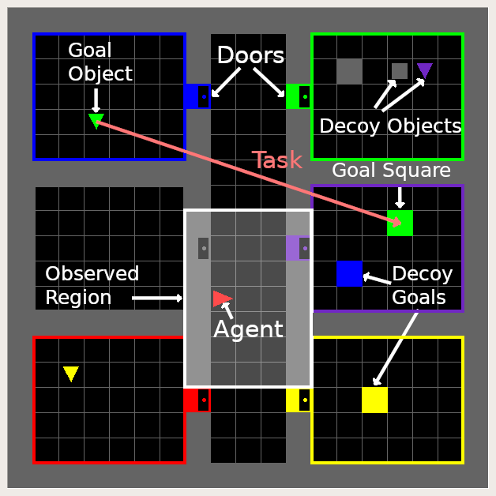
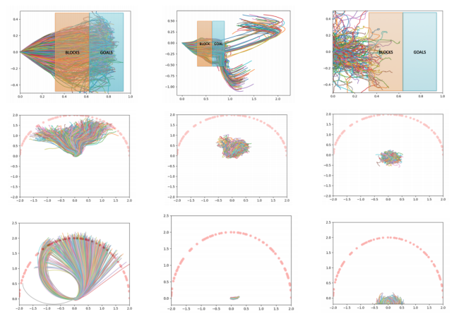
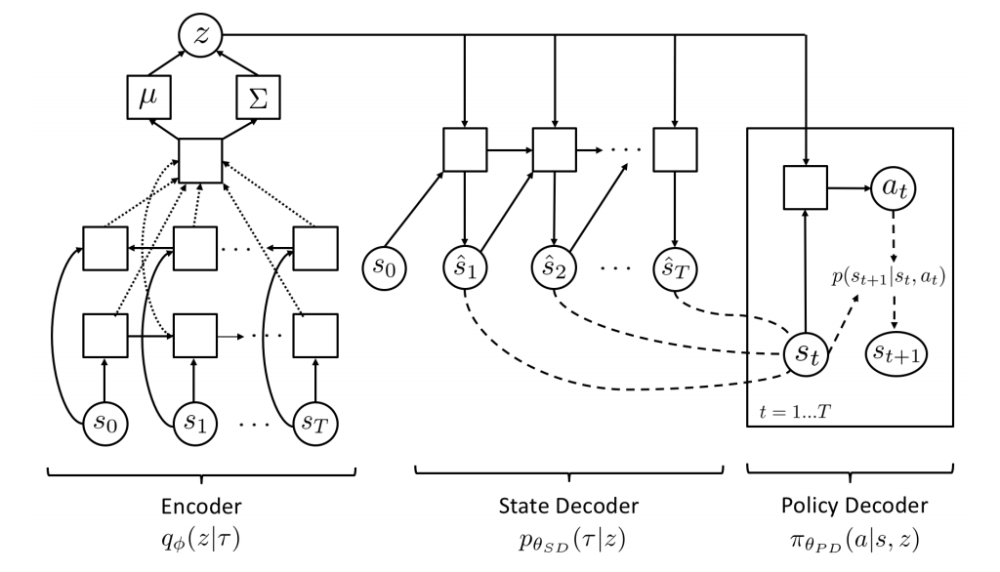
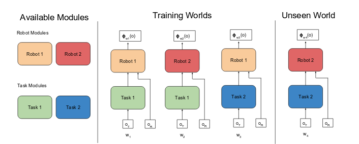
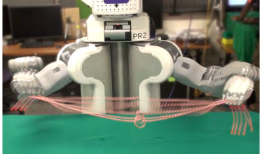
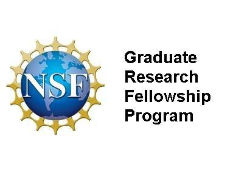

I am a Ph.D. student in EECS at UC Berkeley advised by Professor Pieter Abbeel and Professor Sergey Levine in the Berkeley Artificial Intelligence Research (BAIR) Lab. I also collaborate closely with Professor Chelsea Finn at Stanford University, the Robotics at Google team and collaborators at UW and MIT. Previously I was an undergraduate at UC Berkeley working with Professor Pieter Abbeel, majoring in electrical engineering and computer science (EECS).
I plan to be on the academic job market this year!
My main research goal is to develop algorithms which enable robotic systems to learn how to perform complex tasks in a variety of unstructured environments. To that end, I work towards building deep reinforcement learning algorithms that can learn in the real world. Recently, I have been specifically focusing on the problems of reward specification, continual real world data collection and learning, offline reinforcement learning for robotics and multi-task learning. I am also working on getting robotic hands to be able to learn a variety of complex dexterous skills using deep reinforcement learning. In the past I have worked closely on meta-RL, imitation learning, representation learning, hierarchical RL, video prediction, learning from demonstration and hierarchical planning.
Preprints and Tech Reports

|
Marvin Zhang, Henrik Marklund, Nikita Dhawan, Abhishek Gupta, Sergey Levine, Chelsea Finn
Adaptive Risk Minimization: A Meta-Learning Approach for Tackling Group Shift
[PDF][arXiv][Blog]
A fundamental assumption of most machine learning algorithms is that the training and test data are drawn from the same underlying distribution. However, this assumption is violated in almost all practical applications: machine learning systems are regularly tested on data that are structurally different from the training set, either due to temporal correlations, particular end users, or other factors. In this work, we consider the setting where test examples are not drawn from the training distribution. Prior work has approached this problem by attempting to be robust to all possible test time distributions, which may degrade average performance, or by" peeking" at the test examples during training, which is not always feasible. In contrast, we propose to learn models that are adaptable, such that they can adapt to distribution shift at test time using a batch of unlabeled test data points. We acquire such models by learning to adapt to training batches sampled according to different sub-distributions, which simulate structural distribution shifts that may occur at test time. We introduce the problem of adaptive risk minimization (ARM), a formalization of this setting that lends itself to meta-learning methods. Compared to a variety of methods under the paradigms of empirical risk minimization and robust optimization, our approach provides substantial empirical gains on image classification problems in the presence of distribution shift.
|

|
John D Co-Reyes, Suvansh Sanjeev, Glen Berseth, Abhishek Gupta, Sergey Levine
Ecological Reinforcement Learning
[PDF][arXiv]
Much of the current work on reinforcement learning studies episodic settings, where the agent is reset between trials to an initial state distribution, often with well-shaped reward functions. Non-episodic settings, where the agent must learn through continuous interaction with the world without resets, and where the agent receives only delayed and sparse reward signals, is substantially more difficult, but arguably more realistic considering real-world environments do not present the learner with a convenient “reset mechanism" and easy reward shaping. In this paper, instead of studying algorithmic improvements that can address such non-episodic and sparse reward settings, we instead study the kinds of environment properties that can make learning under such conditions easier. Understanding how properties of the environment impact the performance of reinforcement learning agents can help us to structure our tasks in ways that make learning tractable. We first discuss what we term “environment shaping" – modifications to the environment that provide an alternative to reward shaping, and may be easier to implement. We then discuss an even simpler property that we refer to as “dynamism," which describes the degree to which the environment changes independent of the agent’s actions and can be measured by environment transition entropy. Surprisingly, we find that even this property can substantially alleviate the challenges associated with non-episodic RL in sparse reward settings. We provide an empirical evaluation on a set of new tasks focused on non-episodic learning with sparse rewards. Through this study, we hope to shift the focus of the community towards analyzing how properties of the environment can affect learning and the ultimate type of behavior that is learned via RL.
|

|
Ashvin Nair, Murtaza Dalal, Abhishek Gupta, Sergey Levine
Accelerating online reinforcement learning with offline datasets
[PDF][arXiv][Blog]
Reinforcement learning provides an appealing formalism for learning control policies from experience. However, the classic active formulation of reinforcement learning necessitates a lengthy active exploration process for each behavior, making it difficult to apply in real-world settings. If we can instead allow reinforcement learning to effectively use previously collected data to aid the online learning process, where the data could be expert demonstrations or more generally any prior experience, we could make reinforcement learning a substantially more practical tool. While a number of recent methods have sought to learn offline from previously collected data, it remains exceptionally difficult to train a policy with offline data and improve it further with online reinforcement learning. In this paper we systematically analyze why this problem is so challenging, and propose a novel algorithm that combines sample-efficient dynamic programming with maximum likelihood policy updates, providing a simple and effective framework that is able to leverage large amounts of offline data and then quickly perform online fine-tuning of reinforcement learning policies. We show that our method enables rapid learning of skills with a combination of prior demonstration data and online experience across a suite of difficult dexterous manipulation and benchmark tasks.
|

|
Giulia Vezzani, Abhishek Gupta, Lorenzo Natale, Pieter Abbeel
Learning latent state representation for speeding up exploration
[PDF][arXiv]
Exploration is an extremely challenging problem in reinforcement learning, especially in high dimensional state and action spaces and when only sparse rewards are available. Effective representations can indicate which components of the state are task relevant and thus reduce the dimensionality of the space to explore. In this work, we take a representation learning viewpoint on exploration, utilizing prior experience to learn effective latent representations, which can subsequently indicate which regions to explore. Prior experience on separate but related tasks help learn representations of the state which are effective at predicting instantaneous rewards. These learned representations can then be used with an entropy-based exploration method to effectively perform exploration in high dimensional spaces by effectively lowering the dimensionality of the search space. We show the benefits of this representation for meta-exploration in a simulated object pushing environment.
|
|

|
Abhishek Gupta*, Benjamin Eysenbach*, Chelsea Finn, Sergey Levine
Unsupervised Meta-Learning for Reinforcement Learning
[PDF][arXiv][Blog]
Meta-learning is a powerful tool that builds on multi-task learning to learn how to quickly adapt a model to new tasks. In the context of reinforcement learning, meta-learning algorithms can acquire reinforcement learning procedures to solve new problems more efficiently by meta-learning prior tasks. The performance of meta-learning algorithms critically depends on the tasks available for meta-training: in the same way that supervised learning algorithms generalize best to test points drawn from the same distribution as the training points, meta-learning methods generalize best to tasks from the same distribution as the meta-training tasks. In effect, meta-reinforcement learning offloads the design burden from algorithm design to task design. If we can automate the process of task design as well, we can devise a meta-learning algorithm that is truly automated. In this work, we take a step in this direction, proposing a family of unsupervised meta-learning algorithms for reinforcement learning. We describe a general recipe for unsupervised meta reinforcement learning, and describe an effective instantiation of this approach based on a recently proposed unsupervised exploration technique and model-agnostic meta-learning. We also discuss practical and conceptual considerations for developing unsupervised meta-learning methods. Our experimental results demonstrate that unsupervised meta-reinforcement learning effectively acquires accelerated reinforcement learning procedures without the need for manual task design, significantly exceeds the performance of learning from scratch, and even matches performance of meta-learning methods that use hand-specified task distributions.
|
Publications

|
Dibya Ghosh*, Abhishek Gupta*, Ashwin Reddy, Justin Fu, Coline Devin, Benjamin Eysenbach, Sergey Levine
Learning to Reach Goals via Iterated Supervised Learning
Accepted as an Oral at ICLR 2021
[PDF][arXiv][Blog]
Current reinforcement learning (RL) algorithms can be brittle and difficult to use, especially when learning goal-reaching behaviors from sparse rewards. Although supervised imitation learning provides a simple and stable alternative, it requires access to demonstrations from a human supervisor. In this paper, we study RL algorithms that use imitation learning to acquire goal reaching policies from scratch, without the need for expert demonstrations or a value function. In lieu of demonstrations, we leverage the property that any trajectory is a successful demonstration for reaching the final state in that same trajectory. We propose a simple algorithm in which an agent continually relabels and imitates the trajectories it generates to progressively learn goal-reaching behaviors from scratch. Each iteration, the agent collects new trajectories using the latest policy, and maximizes the likelihood of the actions along these trajectories under the goal that was actually reached, so as to improve the policy. We formally show that this iterated supervised learning procedure optimizes a bound on the RL objective, derive performance bounds of the learned policy, and empirically demonstrate improved goal-reaching performance and robustness over current RL algorithms in several benchmark tasks.
|

|
Henry Zhu*, Justin Yu*, Abhishek Gupta*, Dhruv Shah, Kristian Hartikainen, Avi Singh, Vikash Kumar, Sergey Levine
The Ingredients of Real-World Robotic Reinforcement Learning
Accepted as a Spotlight at ICLR 2020
[PDF][arXiv][Blog]
The success of reinforcement learning for real world robotics has been, in many cases limited to instrumented laboratory scenarios, often requiring arduous human effort and oversight to enable continuous learning. In this work, we discuss the elements that are needed for a robotic learning system that can continually and autonomously improve with data collected in the real world. We propose a particular instantiation of such a system, using dexterous manipulation as our case study. Subsequently, we investigate a number of challenges that come up when learning without instrumentation. In such settings, learning must be feasible without manually designed resets, using only on-board perception, and without hand-engineered reward functions. We propose simple and scalable solutions to these challenges, and then demonstrate the efficacy of our proposed system on a set of dexterous robotic manipulation tasks, providing an in-depth analysis of the challenges associated with this learning paradigm. We demonstrate that our complete system can learn without any human intervention, acquiring a variety of vision-based skills with a real-world three-fingered hand. Results and videos can be found at this https URL
|

|
Aviral Kumar, Abhishek Gupta, Sergey Levine
Discor: Corrective feedback in reinforcement learning via distribution correction
Accepted as a Spotlight at NeurIPS 2020
[PDF][arXiv][Blog]
Deep reinforcement learning can learn effective policies for a wide range of tasks, but is notoriously difficult to use due to instability and sensitivity to hyperparameters. The reasons for this remain unclear. When using standard supervised methods (eg, for bandits), on-policy data collection provides" hard negatives" that correct the model in precisely those states and actions that the policy is likely to visit. We call this phenomenon" corrective feedback." We show that bootstrapping-based Q-learning algorithms do not necessarily benefit from this corrective feedback, and training on the experience collected by the algorithm is not sufficient to correct errors in the Q-function. In fact, Q-learning and related methods can exhibit pathological interactions between the distribution of experience collected by the agent and the policy induced by training on that experience, leading to potential instability, sub-optimal convergence, and poor results when learning from noisy, sparse or delayed rewards. We demonstrate the existence of this problem, both theoretically and empirically. We then show that a specific correction to the data distribution can mitigate this issue. Based on these observations, we propose a new algorithm, DisCor, which computes an approximation to this optimal distribution and uses it to re-weight the transitions used for training, resulting in substantial improvements in a range of challenging RL settings, such as multi-task learning and learning from noisy reward signals. Blog post presenting a summary of this work is available at: this https URL.
|

|
Tianhe Yu, Saurabh Kumar, Abhishek Gupta, Sergey Levine, Karol Hausman, Chelsea Finn
Gradient surgery for multi-task learning
Accepted at NeurIPS 2020
[PDF][arXiv]
While deep learning and deep reinforcement learning (RL) systems have demonstrated impressive results in domains such as image classification, game playing, and robotic control, data efficiency remains a major challenge. Multi-task learning has emerged as a promising approach for sharing structure across multiple tasks to enable more efficient learning. However, the multi-task setting presents a number of optimization challenges, making it difficult to realize large efficiency gains compared to learning tasks independently. The reasons why multi-task learning is so challenging compared to single-task learning are not fully understood. In this work, we identify a set of three conditions of the multi-task optimization landscape that cause detrimental gradient interference, and develop a simple yet general approach for avoiding such interference between task gradients. We propose a form of gradient surgery that projects a task's gradient onto the normal plane of the gradient of any other task that has a conflicting gradient. On a series of challenging multi-task supervised and multi-task RL problems, this approach leads to substantial gains in efficiency and performance. Further, it is model-agnostic and can be combined with previously-proposed multi-task architectures for enhanced performance.
|
|

|
Abhishek Gupta, Vikash Kumar, Corey Lynch, Sergey Levine, Karol Hausman
Relay Policy Learning: Solving Long-Horizon Tasks via Imitation and Reinforcement Learning
Accepted at CoRL 2019
[PDF][arXiv][Interactive Website]
We present relay policy learning, a method for imitation and reinforcement learning that can solve multi-stage, long-horizon robotic tasks. This general and universally-applicable, two-phase approach consists of an imitation learning stage that produces goal-conditioned hierarchical policies, and a reinforcement learning phase that finetunes these policies for task performance. Our method, while not necessarily perfect at imitation learning, is very amenable to further improvement via environment interaction, allowing it to scale to challenging long-horizon tasks. We simplify the long-horizon policy learning problem by using a novel data-relabeling algorithm for learning goal-conditioned hierarchical policies, where the low-level only acts for a fixed number of steps, regardless of the goal achieved. While we rely on demonstration data to bootstrap policy learning, we do not assume access to demonstrations of every specific tasks that is being solved, and instead leverage unstructured and unsegmented demonstrations of semantically meaningful behaviors that are not only less burdensome to provide, but also can greatly facilitate further improvement using reinforcement learning. We demonstrate the effectiveness of our method on a number of multi-stage, long-horizon manipulation tasks in a challenging kitchen simulation environment. Videos are available at this https URL
|
|

|
Michael Ahn, Henry Zhu, Kristian Hartikainen, Hugo Ponte, Abhishek Gupta, Sergey Levine, Vikash Kumar
ROBEL: RObotics BEnchmarks for Learning with low-cost robots
Accepted at CoRL 2019
[PDF][arXiv][Blog]
ROBEL is an open-source platform of cost-effective robots designed for reinforcement learning in the real world. ROBEL introduces two robots, each aimed to accelerate reinforcement learning research in different task domains: D’Claw is a three-fingered hand robot that facilitates learning dexterous manipulation tasks, and D’Kitty is a four-legged robot that facilitates learning agile legged locomotion tasks. These low-cost, modular robots are easy to maintain and are robust enough to sustain on-hardware reinforcement learning from scratch with over 14000 training hours registered on them to date. To leverage this platform, we propose an extensible set of continuous control benchmark tasks for each robot. These tasks feature dense and sparse task objectives, and additionally introduce score metrics for hardware-safety. We provide benchmark scores on an initial set of tasks using a variety of learning-based methods. Furthermore, we show that these results can be replicated across copies of the robots located in different institutions. Code, documentation, design files, detailed assembly instructions, trained policies, baseline details, task videos, and all supplementary materials required to reproduce the results are available at \url{www.roboticsbenchmarks.org}.
|
|

|
Russell Mendonca, Abhishek Gupta, Rosen Kralev, Pieter Abbeel, Sergey Levine, Chelsea Finn
Guided Meta-Policy Search
Accepted as a Spotlight at NeurIPS 2019
[PDF][arXiv]
Reinforcement learning (RL) algorithms have demonstrated promising results on complex tasks, yet often require impractical numbers of samples because they learn from scratch. Meta-RL aims to address this challenge by leveraging experience from previous tasks in order to more quickly solve new tasks. However, in practice, these algorithms generally also require large amounts of on-policy experience during the meta-training process, making them impractical for use in many problems. To this end, we propose to learn a reinforcement learning procedure through imitation of expert policies that solve previously-seen tasks. This involves a nested optimization, with RL in the inner loop and supervised imitation learning in the outer loop. Because the outer loop imitation learning can be done with off-policy data, we can achieve significant gains in meta-learning sample efficiency. In this paper, we show how this general idea can be used both for meta-reinforcement learning and for learning fast RL procedures from multi-task demonstration data. The former results in an approach that can leverage policies learned for previous tasks without significant amounts of on-policy data during meta-training, whereas the latter is particularly useful in cases where demonstrations are easy for a person to provide. Across a number of continuous control meta-RL problems, we demonstrate significant improvements in meta-RL sample efficiency in comparison to prior work as well as the ability to scale to domains with visual observations.
|

|
Allan Jabri, Kyle Hsu, Benjamin Eysenbach, Abhishek Gupta, Alexei Efros, Sergey Levine, Chelsea Finn
Unsupervised Curricula for Visual Meta-Reinforcement Learning
Accepted as a Spotlight at NeurIPS 2019
[PDF][arXiv]
Meta-reinforcement learning algorithms leverage experience across many tasks to learn fast and effective reinforcement learning (RL) algorithms. However, current meta-RL methods depend critically on a manually-defined distribution of meta-training tasks, and hand-crafting these task distributions is challenging and time-consuming. We develop an unsupervised algorithm for inducing an adaptive meta-training task distribution, i.e. an automatic curriculum, by modeling unsupervised interaction in a visual environment.
Crucially, the task distribution is scaffolded by the meta-learner's behavior, with density-based exploration driving the evolution of the task distribution. We formulate unsupervised meta-RL with an information-theoretic objective optimized via expectation-maximization over trajectory-level latent variables. Repeating this procedure leads to iterative reorganization of behavior, allowing the task distribution to adapt as the meta-learner becomes more competent. In our experiments on vision-based navigation and manipulation domains, we show that our algorithm allows for unsupervised meta-learning of skills that transfer to downstream tasks specified by human-provided reward functions, as well as pre-training for more efficient meta-learning on user-defined task distributions. To understand the nature of the curricula, we provide visualizations and analysis of the task distributions discovered throughout the learning process, finding that the emergent tasks span a range of environment-specific exploratory and exploitative behavior.
|

|
Henry Zhu*, Abhishek Gupta*, Aravind Rajeswaran, Sergey Levine, Vikash Kumar
Dexterous Manipulation with Deep Reinforcement Learning: Efficient, General, and Low-Cost
Accepted at ICRA 2019
[PDF][arXiv][Blog]
Dexterous multi-fingered robotic hands can perform a wide range of manipulation skills, making them an appealing component for general-purpose robotic manipulators. However, such hands pose a major challenge for autonomous control, due to the high dimensionality of their configuration space and complex intermittent contact interactions. In this work, we propose deep reinforcement learning (deep RL) as a scalable solution for learning complex, contact rich behaviors with multi-fingered hands. Deep RL provides an end-to-end approach to directly map sensor readings to actions, without the need for task specific models or policy classes. We show that contact-rich manipulation behavior with multi-fingered hands can be learned by directly training with model-free deep RL algorithms in the real world, with minimal additional assumption and without the aid of simulation. We learn a variety of complex behaviors on two different low-cost hardware platforms. We show that each task can be learned entirely from scratch, and further study how the learning process can be further accelerated by using a small number of human demonstrations to bootstrap learning. Our experiments demonstrate that complex multi-fingered manipulation skills can be learned in the real world in about 4-7 hours for most tasks, and that demonstrations can decrease this to 2-3 hours, indicating that direct deep RL training in the real world is a viable and practical alternative to simulation and model-based control. \url{this https URL}
|

|
Michael B. Chang, Abhishek Gupta, Sergey Levine, Thomas Griffiths
Automatically Composing Representation Transformations as a Means for Generalization
Accepted at ICLR 2019
[PDF][arXiv]
How can we build a learner that can capture the essence of what makes a hard problem more complex than a simple one, break the hard problem along characteristic lines into smaller problems it knows how to solve, and sequentially solve the smaller problems until the larger one is solved? To work towards this goal, we focus on learning to generalize in a particular family of problems that exhibit compositional and recursive structure: their solutions can be found by composing in sequence a set of reusable partial solutions. Our key idea is to recast the problem of generalization as a problem of learning algorithmic procedures: we can formulate a solution to this family as a sequential decision-making process over transformations between representations. Our formulation enables the learner to learn the structure and parameters of its own computation graph with sparse supervision, make analogies between problems by transforming one problem representation to another, and exploit modularity and reuse to scale to problems of varying complexity. Experiments on solving a variety of multilingual arithmetic problems demonstrate that our method discovers the hierarchical decomposition of a problem into its subproblems, generalizes out of distribution to unseen problem classes, and extrapolates to harder versions of the same problem, yielding a 10-fold reduction in sample complexity compared to a monolithic recurrent neural network.
|

|
Benjamin Eysenbach, Abhishek Gupta, Julian Ibarz, Sergey Levine
Diversity is All You Need: Learning Skills without a Reward Function
Accepted at ICLR 2019
[PDF][Video][arXiv]
In this paper, we propose DIAYN ("Diversity is All You Need"), a method for learning useful skills without a reward function. Our proposed method learns skills by maximizing an information theoretic objective using a maximum entropy policy. On a variety of simulated robotic tasks, we show that this simple objective results in the unsupervised emergence of diverse skills, such as walking and jumping. In a number of reinforcement learning benchmark environments, our method is able to learn a skill that solves the benchmark task despite never receiving the true task reward. In these environments, some of the learned skills correspond to solving the task, and each skill that solves the task does so in a distinct manner. Our results suggest that unsupervised discovery of skills can serve as an effective pretraining mechanism for overcoming challenges of exploration and data efficiency in reinforcement learning.
|

|
Dibya Ghosh, Abhishek Gupta, Sergey Levine
Learning Actionable Representations with Goal-Conditioned Policies
Accepted at ICLR 2019
[PDF][arXiv]
Representation learning is a central challenge across a range of machine learning
areas. In reinforcement learning, effective and functional representations have the
potential to tremendously accelerate learning progress and solve more challenging
problems. Most prior work on representation learning has focused on generative
approaches, learning representations that capture all underlying factors of variation in the observation space in a more disentangled or well-ordered manner. In this paper, we instead aim to learn functionally salient representations: representations that are not necessarily complete in terms of capturing all factors of variation in the observation space, but rather aim to capture those factors of variation that are important for decision making – that are “actionable.” These representations are aware of the dynamics of the environment, and capture only the elements of the observation that are necessary for decision making rather than all factors of variation, without explicit reconstruction of the observation. We show how these representations can be useful to improve exploration for sparse reward problems, to enable long horizon hierarchical reinforcement learning, and as a state representation for learning policies for downstream tasks. We evaluate our method on a number of simulated environments, and compare it to prior methods for representation learning, exploration, and hierarchical reinforcement learning.
|
|

|
John D Co-Reyes, Abhishek Gupta, Suvansh Sanjeev, Nick Altieri, John DeNero, Pieter Abbeel, Sergey Levine
Guiding Policies with Language via Meta-Learning
Accepted at ICLR 2019
[PDF][arXiv]
Behavioral skills or policies for autonomous agents are conventionally learned from reward functions, via reinforcement learning, or from demonstrations, via imitation learning. However, both modes of task specification have their disadvantages: reward functions require manual engineering, while demonstrations require a human expert to be able to actually perform the task in order to generate the demonstration. Instruction following from natural language instructions provides an appealing alternative: in the same way that we can specify goals to other humans simply by speaking or writing, we would like to be able to specify tasks for our machines. However, a single instruction may be insufficient to fully communicate our intent or, even if it is, may be insufficient for an autonomous agent to actually understand how to perform the desired task. In this work, we propose an interactive formulation of the task specification problem, where iterative language corrections are provided to an autonomous agent, guiding it in acquiring the desired skill. Our proposed language-guided policy learning algorithm can integrate an instruction and a sequence of corrections to acquire new skills very quickly. In our experiments, we show that this method can enable a policy to follow instructions and corrections for simulated navigation and manipulation tasks, substantially outperforming direct, non-interactive instruction following.
|
|

|
Abhishek Gupta, Russell Mendonca, YuXuan Liu, Pieter Abbeel, Sergey Levine
Meta-Reinforcement Learning of Structured Exploration Strategies
Accepted at NeurIPS 2018
[PDF][arXiv]
Exploration is a fundamental challenge in reinforcement learning (RL). Many of the current exploration methods for deep RL use task-agnostic objectives, such as information gain or bonuses based on state visitation. However, many practical applications of RL involve learning more than a single task, and prior tasks can be used to inform how exploration should be performed in new tasks. In this work, we explore how prior tasks can inform an agent about how to explore effectively in new situations. We introduce a novel gradient-based fast adaptation algorithm -- model agnostic exploration with structured noise (MAESN) -- to learn exploration strategies from prior experience. The prior experience is used both to initialize a policy and to acquire a latent exploration space that can inject structured stochasticity into a policy, producing exploration strategies that are informed by prior knowledge and are more effective than random action-space noise. We show that MAESN is more effective at learning exploration strategies when compared to prior meta-RL methods, RL without learned exploration strategies, and task-agnostic exploration methods. We evaluate our method on a variety of simulated tasks: locomotion with a wheeled robot, locomotion with a quadrupedal walker, and object manipulation.
|
|

|
John D Co-Reyes*, YuXuan Liu*, Abhishek Gupta*, Benjamin Eysenbach, Pieter Abbeel, Sergey Levine
Self-Consistent Trajectory Autoencoder: Hierarchical Reinforcement Learning with Trajectory Embeddings
Accepted at ICML 2018
[PDF][arXiv]
In this work, we take a representation learning perspective on hierarchical reinforcement learning, where the problem of learning lower layers in a hierarchy is transformed into the problem of learning trajectory-level generative models. We show that we can learn continuous latent representations of trajectories, which are effective in solving temporally extended and multi-stage problems. Our proposed model, SeCTAR, draws inspiration from variational autoencoders, and learns latent representations of trajectories. A key component of this method is to learn both a latent-conditioned policy and a latent-conditioned model which are consistent with each other. Given the same latent, the policy generates a trajectory which should match the trajectory predicted by the model. This model provides a built-in prediction mechanism, by predicting the outcome of closed loop policy behavior. We propose a novel algorithm for performing hierarchical RL with this model, combining model-based planning in the learned latent space with an unsupervised exploration objective. We show that our model is effective at reasoning over long horizons with sparse rewards for several simulated tasks, outperforming standard reinforcement learning methods and prior methods for hierarchical reasoning, model-based planning, and exploration.
|

|
Aravind Rajeswaran, Vikash Kumar, Abhishek Gupta, John Schulman, Emanuel Todorov, Sergey Levine
Learning Complex Dexterous Manipulation with Deep Reinforcement Learning and Demonstrations
Accepted at RSS 2018
[PDF][Video][arXiv]
Dexterous multi-fingered hands are extremely versatile and provide a generic way to perform multiple tasks in human-centric environments. However, effectively controlling them remains challenging due to their high dimensionality and large number of potential contacts. Deep reinforcement learning (DRL) provides a model-agnostic approach to control complex dynamical systems, but has not been shown to scale to high-dimensional dexterous manipulation. Furthermore, deployment of DRL on physical systems remains challenging due to sample inefficiency. Thus, the success of DRL in robotics has thus far been limited to simpler manipulators and tasks. In this work, we show that model-free DRL with natural policy gradients can effectively scale up to complex manipulation tasks with a high-dimensional 24-DoF hand, and solve them from scratch in simulated experiments. Furthermore, with the use of a small number of human demonstrations, the sample complexity can be significantly reduced, and enable learning within the equivalent of a few hours of robot experience. We demonstrate successful policies for multiple complex tasks: object relocation, in-hand manipulation, tool use, and door opening.
|

|
YuXuan Liu*, Abhishek Gupta*, Pieter Abbeel, Sergey Levine
Imitation from Observation: Learning to Imitate Behaviors from Raw Video via Context Translation
Accepted at ICRA 2018
[PDF][Video][arXiv]
This work addresses the problem of learning behaviors by observing raw video demonstrations. We aim to enable a robot to learn complex manipulation behaviors by observing demonstration videos of a task being performed by a human demonstrator in a different context (eg viewpoint, lighting conditions, distractors, etc) than the one it has the perform the task in. We learn a context aware translation model which is able to model these context changes, and use a simple feature tracking perceptual reward in order to enable imitation from arbitrary contexts. We provide a large variety of experiments in both simulation and using a real 7 DoF sawyer robotic arm to illustrate our method.
|

|
Abhishek Gupta*, Coline Devin*, Yuxuan Liu, Pieter Abbeel, Sergey Levine
Learning Invariant Feature Spaces to Transfer Skills with Reinforcement Learning
Accepted at ICLR 2017.
[PDF][Video][OpenReview]
In this paper, we examine how reinforcement learning algorithms can transfer knowledge between morphologically different agents. We introduce a problem formulation where two agents are tasked with learning multiple skills by sharing information. Our method uses the skills that were learned by both agents to train invariant feature spaces that can then be used to transfer other skills from one agent to another. We evaluate our transfer learning algorithm in two simulated robotic manipulation skills
|
|

|
Abhishek Gupta*, Coline Devin*, Yuxuan Liu, Pieter Abbeel, Sergey Levine
Learning Modular Neural Network Policies for Multi-Task and Multi-Robot Transfer
Accepted at ICRA 2017.
[PDF][Video][arXiv]
We propose modular policy networks, a general approach for transferring components of neural network policies between robots, tasks, and other degrees of variation. Modular policy networks consist of modules that can be mixed and matches to perform new robot-task combinations (or, in general, other combinations of the degrees of variation). For example, a module for opening a drawer can be combined with a module for controlling a four-link robot arm to enable a four-link arm to open the drawer. We demonstrate that modular policy networks can transfer knowledge to new tasks and even perform zero-shot learning for new task-robot combinations.
|

|
Abhishek Gupta, Clemens Eppner, Sergey Levine, Pieter Abbeel
Learning Dexterous Manipulation for a Soft Robotic Hand from Human Demonstration
Accepted at IROS 2016.
[PDF][Video][arXiv]
In this work, we present a method for learning dexterous manipulation skills for a low-cost, soft robotic hand. We show how we can learn a variety of motion skills using object-centric human demonstrations: demonstrations where the human manipulates an object using his own hand, and the robot then learns to track the trajectory of the object. By tracking a variety of human demonstrations with different initial conditions, the robot can acquire a generalizable neural network policy that can carry out the demonstrated behavior under new conditions. Control is performed directly at the level of inflation and deflation commands to the soft hand, and we demonstrate the method on a range of tasks, including turning a valve, moving the beads on an abacus, and grasping a bottle.
|

|
Rohan Chitnis, Dylan Hadfield-Menell, Abhishek Gupta, Siddhart Srivastava, Edward Groshev, Christopher Lin, Pieter Abbeel
Guided Search for Task and Motion Plans Using Learned Heuristics
Accepted at ICRA 2016.
[PDF][Video]
Task and motion planning(TAMP) methods integrate logical search over high-level actions with geometric reasoning to address this challenge. We present an algorithm that searches the space of possible task and motion plans and uses statistical machine learning to guide the search process. Our contributions are as follows:1) We present a complete algorithm for TAMP 2) We present a randomized local search algorithm for plan refinement that is easily formulated as a Markov decision process(MDP) 3) We apply reinforcement learning(RL) to learn a policy for this MDP 4) We learn from expert demonstrations to efficiently search the space of high-level task plans, given options that address different infeasibilities and 5) We run experiments to evaluate our system in a variety of simulated domains.
|

|
Alex Lee, Abhishek Gupta, Henry Lu, Sergey Levine, Pieter Abbeel
Learning from Multiple Demonstrations using Trajectory-Aware Non-Rigid Registration with Applications to Deformable Object Manipulation
Accepted at IROS 2015.
[PDF]
Trajectory transfer using point cloud registration is powerful tool for learning from demonstration, but is typically unaware of which elements of the scene are relevant to the task. In this work, we determine relevance by considering the demonstrated trajectory, and perform registration with a trajectory-aware method to improve generalization.
|
|

|
Alex X. Lee, Henry Lu, Abhishek Gupta, Sergey Levine, Pieter Abbeel
Learning Force-Based Manipulation of Deformable Objects from Multiple Demonstrations.
Accepted at ICRA 2015.
[PDF]
This paper combines trajectory transfer via point cloud registration with variable impedance control, in order to improve the generalization of behaviors that require a mix of precise, high-gain motion and force-driven behaviors like straightening a towel. Multiple example demonstrations are analyzed to determine which part of the motion should emphasize precise positioning, and which part requires matching the demonstrated forces. The method is demonstrated on rope tying, towel folding, and erasing a whiteboard.
|

|
Siddharth Srivastava, Shlomo Zilberstein, Abhishek Gupta, Pieter Abbeel, Stuart Russell
Tractability of Planning with Loops
Accepted at AAAI 2015.
[PDF][Video]
In this work, we create a unified framework for analyzing and synthesizing plans with loops for solving problems with non-deterministic numeric effects and a limited form of partial observability. Three different action models with deterministic, qualitative non-deterministic and Boolean non-deterministic semantics are handled using a single abstract representation. We establish the conditions under which the correctness and termination of solutions, represented as ab-stract policies, can be verified. We also examine the feasibility of learning abstract policies from examples. We demonstrate our techniques on several planning problems and show that they apply to challenging real-world tasks such as doing the laundry with a PR2 robot.
|
Research Support
|

|
National Science Foundation Graduate Research Fellowship, 2016-present
|
|